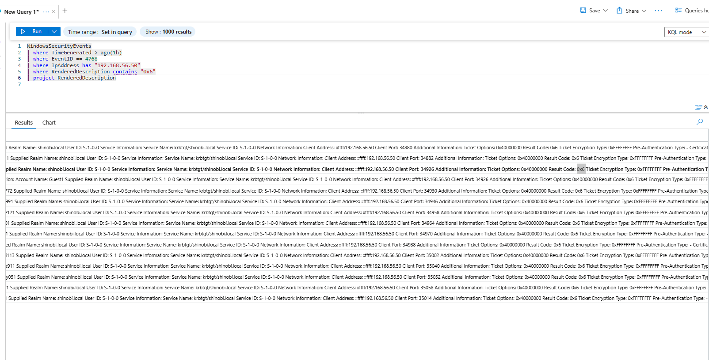
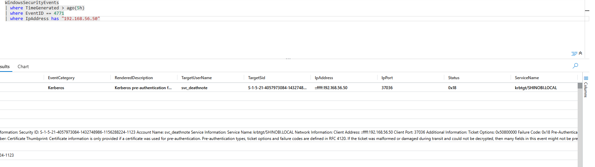
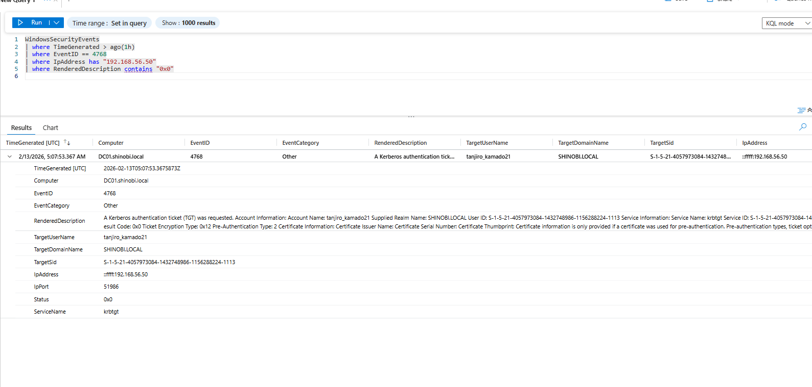

Detection & Telemetry (Kerberos Brute Force)
Attack Vector: The attacker utilized Nmap (specifically krb5-enum-users) to identify valid usernames by analyzing Kerberos error codes. Following this, they used Kerbrute to perform a password spraying/brute-force attack against the discovered users. Finally, they successfully cracked the password for tanjiro_kamado21 and requested a TGT.
Key Log Sources:
0x6: Client not found (Invalid Username).0x18: Pre-authentication information was invalid (Wrong Password).Objective: Detect the reconnaissance phase where the attacker attempts to guess valid usernames. Logic: When an attacker requests a TGT for a user that does not exist, the KDC responds with Result Code 0x6 (Client not found). A burst of these errors from a single IP indicates a directory harvesting attempt.
KQL Query:
WindowsSecurityEvents
| where TimeGenerated > ago(1h)
| where EventID == 4768
| where IpAddress has "192.168.56.50" // Attacker IP
| where RenderedDescription contains "0x6" // Client Not Found (Invalid Username)
| project TimeGenerated, EventID, Activity="Kerberos User Enum", TargetUserName, IpAddress, Status
Analysis:
4768 (TGT Request).0x6.0x6 errors in bulk. This specific error code confirms the attacker is "guessing" usernames, and the AD is rejecting them because the account does not exist.
Objective: Detect the active password guessing phase against valid accounts. Logic: Once valid users are found, the attacker guesses passwords. If the password is wrong, the KDC logs Event ID 4771 with Failure Code 0x18 (Pre-Authentication Failed).
KQL Query:
WindowsSecurityEvents
| where TimeGenerated > ago(5h)
| where EventID == 4771 // Kerberos Pre-Auth Failed
| where IpAddress has "192.168.56.50"
| where FailureCode == "0x18" // Wrong Password
| project TimeGenerated, EventID, Activity="Kerberos Brute Force", TargetUserName, IpAddress, FailureCode
Analysis:
4771.svc_deathnote (and others in the list).0x18.
Objective: Identify the critical moment when the Brute Force succeeded. Logic: We look for a Successful TGT Request (Event 4768, Result 0x0) coming from the attacker's IP, specifically for a user account that was previously being targeted.
KQL Query:
WindowsSecurityEvents
| where TimeGenerated > ago(1h)
| where EventID == 4768
| where IpAddress has "192.168.56.50" // Attacker IP
| where RenderedDescription contains "0x0" // Success
| project TimeGenerated, EventID, Activity="Brute Force Success", TargetUserName, IpAddress, Status
Analysis:
tanjiro_kamado21.0x0 (Success).Hinokami@456) and obtained a valid Ticket Granting Ticket. This represents the successful breach of the account.